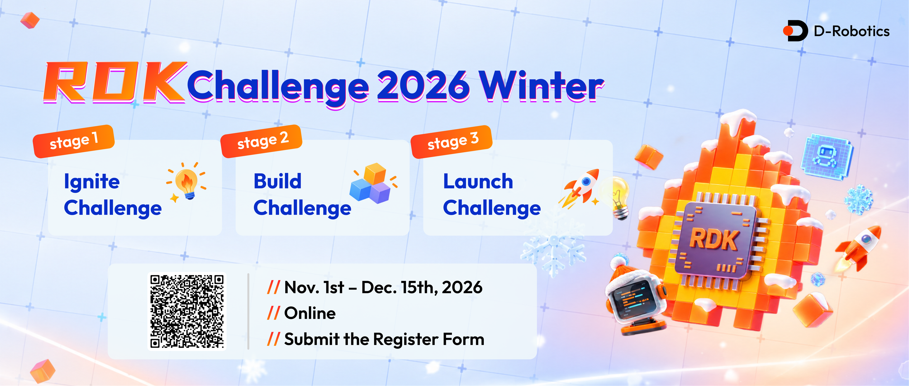

Photo224 × 224 RGB
→Modified RN50Convolutions + attention pooling
→1024-dImage vector
CLIP → ONNX → PTQ → RUNTIME
We will take a pretrained CLIP model, prepare and quantize its image encoder, and build a local photo search demo on RDK X5.

AGENDA
01 / MODEL
CLIP learns a shared feature space using pairs of images and captions. At search time, the two encoders run separately.
score = image_vector · text_vectorSort by similarityNo. We normalize the two vectors, calculate their dot product, and rank the photos. The contrastive loss is used during training, not during retrieval.
IMAGE ENCODER
The image encoder uses a three-convolution stem and four groups of residual blocks. A 7 × 7 feature map goes through attention pooling and a projection to produce a 1024-dimensional vector.
TEXT ENCODER
Tokens and positional embeddings pass through causal self-attention, residual connections, layer normalization and feed-forward layers. The end-of-text feature is projected to 1024 dimensions.
ViT uses a Transformer for image patches. Our selected RN50 uses convolutions for its image backbone.
Attention Is All You Need ↗FOLLOW THE OUTPUT · REAL RN50 FORWARD PASS
Follow the EOT (end-of-text) position through attention, then use the resulting sentence vector to rank photos.
Saved FP32 forwards of the local OpenAI RN50 checkpoint. We inspect the EOT query in the final text block. Each head’s scores use all 64 coordinates; vector previews show the first six. Other positions, prior layers, residual paths and the MLP remain part of the real computation.
Photo rankings use the complete normalized 1,024-dimensional text feature and our saved paired FP32 RN50 image features for 512 COCO images. They are reference results, not a new X5 quantized benchmark. Changing the inspected head changes the view, not the model or ranking. Attention weights are routing coefficients, not a causal explanation of the whole prediction.
Trace-generation script ↗ Saved values ↗ OpenAI model implementation ↗MODEL ANATOMY / TRAINING
Let’s follow the shapes, then see how training connects the two branches.
CLIP RN50 · IMAGE ENCODER
Each bottleneck follows a convolution path and a shortcut. Their outputs are added before the final activation. The shortcut gives the network a direct path for information and gradients.
CLIP ViT-B/32 · ALTERNATIVE IMAGE ENCODER
These are the dimensions of the original OpenAI ViT-B/32 checkpoint, not the RN50 we ultimately deployed. Each patch projection and the class token enter the vision Transformer; the image encoder output is 512-dimensional.
ONE TRANSFORMER BLOCK
A complete block. The text encoder repeats it 12 times sequentially; each layer receives the previous layer’s output.
One parallel attention calculation within a layer. RN50 text uses width 512 ÷ 8 = 64 dimensions per head.
Learned projections of the token representations. Softmax(QKᵀ / √64) weights V. A causal mask prevents text positions attending to future tokens.
CLIP uses pre-LayerNorm: x₁ = x + Attention(LN(x)); x₂ = x₁ + MLP(LN(x₁)). The original Transformer paper describes a different post-LN ordering.
INTERACTIVE EXPLANATION
A two-pair batch, from encoders to loss and gradients.
TRAINING · CONTRASTIVE LEARNING
For a batch of N matched image–text pairs, normalize the projected vectors. Their dot products form an N × N similarity matrix, multiplied by a learned positive scale. Correct pairs lie on the diagonal.
For each row, cross-entropy rewards the matching caption. For each column, it rewards the matching image. The CLIP loss averages the two directions:
Backpropagation sends gradients through the similarity scores and normalization into both projection heads and both encoders. The optimizer updates their trainable parameters and the logit scale. Image pixels and caption tokens are inputs, not updated parameters.
At inference there is no cross-modal Transformer after the encoders: normalize vectors, compute similarity, and rank. This is late interaction through a shared embedding space.
02 / SOURCE
OpenAI released the code and checkpoints. The original WIT training collection was not released.
git clone https://github.com/openai/CLIP.gitclip.load("RN50", device="cpu")afeb0e10…c04b6762Compare the complete SHA-256.model.visual + model.encode_textExport both from the same checkpoint.Step 1 · Clone the official repository
Windows PowerShell · project folder
git clone https://github.com/openai/CLIP.git upstream-openai-clipStep 2 · Install dependencies
Windows PowerShell · prepared Python environment
python -m pip install -r upstream-openai-clip/requirements.txt
python -m pip install onnx onnxruntime pillow numpyStep 3 · Load and inspect the checkpoint
Python code · save as inspect_checkpoint.py in the project folder
import hashlib
from pathlib import Path
import sys
sys.path.insert(0, "upstream-openai-clip")
import clip
model, preprocess = clip.load("RN50", device="cpu", jit=False,
download_root="weights")
checkpoint = Path("weights/RN50.pt")
digest = hashlib.sha256(checkpoint.read_bytes()).hexdigest()
print("checkpoint", checkpoint, checkpoint.stat().st_size)
print("sha256", digest)
print("visual", type(model.visual).__name__, model.visual.output_dim)
print("text transformer", model.transformer.layers,
model.transformer.width,
model.transformer.resblocks[0].attn.num_heads)
print("context length", model.context_length)Step 4 · Run the saved Python script
Windows PowerShell · project folder
python inspect_checkpoint.pyThe script downloads weights/RN50.pt. The export script expects RN50.pt in the project root; copy the verified checkpoint there before export.
Step 5 · Place the checkpoint for export
Windows PowerShell · project folder
Copy-Item weights\RN50.pt RN50.ptIf RN50.pt already exists, verify its hash before replacing it.
03 / EXPORT
Fix the input shapes, export both branches, then verify the float outputs before quantization.
image = torch.zeros(1, 3, 224, 224, dtype=torch.float32)
tokens = clip.tokenize(["a photo of a dog"]) # [1, 77], int32
# Image branch: model.visual already ends at a 1024-d projected feature.
torch.onnx.export(
model.visual, image, "clip_rn50_image.onnx",
input_names=["image"], output_names=["image_features"],
opset_version=11, dynamo=False,
)
class TextEncoder(torch.nn.Module):
def __init__(self, owner):
super().__init__()
self.owner = owner
def forward(self, texts):
return self.owner.encode_text(texts)
torch.onnx.export(
TextEncoder(model).eval(), tokens, "clip_rn50_text.onnx",
input_names=["texts"], output_names=["text_features"],
opset_version=11, dynamo=False,
)The full script also rewrites attention operations for opset 11 and compares exported outputs with PyTorch.
Step 1 · Open the project folder
Windows PowerShell
Set-Location D:\webinar\clip-photo-searchStep 2 · Export the paired encoders
Windows PowerShell · project folder
python -u export_rn50_x5.pyThis overwrites the existing ONNX files. The script checks the checkpoint and compares PyTorch with ONNX.
NETRON
Our image graph has 175 nodes, including 55 Conv, 5 MatMul and 1 Softmax. The text graph has 973 nodes and 12 Softmax operations.
04 / PTQ
Post-training quantization observes representative inputs and selects ranges and scaling parameters. It does not retrain the weights.
AFFINE QUANTIZATION
A narrow range clips outliers; a wide range gives each quantization step less resolution.
This is a simplified illustration, not a simulation of the X5 compiler.
We selected 256 COCO 2017 images for calibration and 512 different images for evaluation. For a real NAS, use representative photos and keep a separate test set.
INTERACTIVE EXPLANATION
Follow one float value through integer conversion and reconstruction.
QUANTIZATION / HOW IT WORKS
Follow one number through quantization and dequantization before looking at a whole neural network.
EXAMPLE · INT8
The reconstructed value differs from the original by 0.03. Dequantization maps the integer back to the float scale; it cannot recover information lost to rounding or clipping.
Rounding: a continuum of values must share a finite number of integer codes. Values between grid points are approximated.
Clipping: values outside the selected range saturate at qmin or qmax. A larger range keeps more outliers but makes each step coarser at the same bit width.
For nearest rounding within range, the error of an individual scalar is typically bounded by half a step; saturation breaks that bound.
Scale is the spacing between adjacent represented values. Zero point identifies the integer code for real zero. Symmetric quantization usually centers around zero; asymmetric quantization can better use codes for a shifted range.
Weights are known after training. Activations depend on inputs, so PTQ observes representative examples to estimate ranges. Some schemes use one scale per tensor or separate scales per channel.
Quantized multiplies and accumulations propagate approximations through the network. LayerNorm, attention and outliers can amplify or redistribute perturbations; the size of the effect is model and input dependent.
Quantization converts a floating-point value to a low-precision code. Dequantization reconstructs an approximation on the original scale. Fake quantization simulates this numerical effect while keeping a floating-point representation; it is useful for analysis or quantization-aware training. PTQ calibration does not backpropagate; QAT can use a gradient approximation through rounding.
QUANTIZATION UNDER THE HOOD
For affine quantization, q = clamp(round(x / s) + z, qmin, qmax) and x̂ = s(q − z). For activations and weights with per-tensor scales, a dot product can be approximated by:
The integer products are typically accumulated in a wider integer type; bias handling, rounding and requantization depend on the kernel and backend. Scales can be applied after accumulation only when their granularity permits it.
Symmetric quantization centers the range around zero, often using zero point 0. Asymmetric quantization uses a nonzero zero point to cover shifted ranges more efficiently. For uint8 range [−1, 3], the scale is 4/255 ≈ 0.015686 and the zero point is round(1/scale) = 64. For x = 0.5, q = 96 and x̂ ≈ 0.502. These figures illustrate an affine scheme; the exact toolchain configuration must be checked in its report.
One scale per tensor is simple, but one extreme channel can make the step coarse for all others. Per-channel or per-group scales can fit different distributions more closely at the cost of metadata and hardware support. Per-group is common in some LLM weight-only formats; do not assume it is the scheme used by this X5 model.
Max uses the observed extremes; percentile allows some clipping to preserve resolution; KL-based methods compare distributions. Compare strategies using the same held-out dataset. First check preprocessing and float ONNX, then compare optimized float, calibration/quantized output, compiled model and board. Use the actual optimized node names and check the toolchain report before trying mixed precision.
Our RN50 run used 256 calibration samples and default, whose log selected max-percentile 0.99995 with asymmetric quantization. It was not GPTQ, AWQ or SmoothQuant. Our ViT experiment showed early divergence near LayerNorm; the failed int16 override did not hit the optimized nodes, so it does not establish that int16 cannot help.
RDK X5 HARDWARE
The Brain Processing Unit is a dedicated neural-network accelerator on the RDK X5. It executes supported low-precision neural-network operations; the CPU handles general-purpose application work and operations assigned to it.
Our compile log also reports a final CPU Reshape. CPU/BPU boundaries may require data conversion and transfers, so the whole model’s latency cannot be inferred from BPU-only estimates. Operator placement depends on the toolchain and actual operator constraints.
05 / TOOLCHAIN
First read the four YAML sections, then see how makertbin uses them to create the X5 model.
# Model location, X5 target, and generated artifact location.
model_parameters:
# ONNX image encoder path inside the Docker container.
onnx_model: '/workspace/float_models/clip_rn50_image.onnx'
# bayes-e selects the RDK X5 architecture.
march: 'bayes-e'
# Output directory inside Docker. Change it if you want to preserve earlier results.
working_dir: '/workspace/build/clip_rn50_coco256_default'
# Prefix for the generated model and related output files.
output_model_file_prefix: 'clip_rn50_x5_coco256'
# Keep per-layer output dumping off for this build.
layer_out_dump: false
# Input contract must match the exported ONNX and runtime preprocessing.
input_parameters:
# Name of the ONNX model input; check it in Netron.
input_name: 'image'
# Input is a preprocessed feature tensor, not an image in NV12 format.
input_type_train: 'featuremap'
# ONNX input layout: batch, channels, height, width.
input_layout_train: 'NCHW'
# Runtime also supplies a preprocessed feature tensor.
input_type_rt: 'featuremap'
# Runtime tensor layout must match the application input.
input_layout_rt: 'NCHW'
# CLIP normalization is done outside the model; do not apply it twice.
norm_type: 'no_preprocess'
# Representative input tensors used to estimate quantization ranges.
calibration_parameters:
# Directory inside Docker containing raw preprocessed calibration tensors.
cal_data_dir: '/workspace/calibration_coco256'
# Each file contains raw float32 values, not a .npy header.
cal_data_type: 'float32'
# Let the toolchain choose its default calibration strategy; inspect the log.
calibration_type: 'default'
# Compilation settings for the X5 target.
compiler_parameters:
# Optimize for latency rather than throughput.
compile_mode: 'latency'
# Compiler optimization level; validate performance on the board.
optimize_level: 'O3'
# Number of parallel compilation jobs.
jobs: 4
# Generate additional compilation debug information.
debug: true1. Read and optimize: load the ONNX model and input contract, then optimize the graph for the selected target.
2. Calibrate and quantize: run the calibration inputs to estimate activation ranges, select quantization parameters and produce a quantized graph. In our recorded run, the log reports max-percentile 0.99995 with asymmetric quantization; check your own log for the actual result.
3. Partition and compile: assign supported operations to the BPU and others to the CPU, then compile and package the model using the chosen compiler settings.
4. Inspect the output: review the compiler log and artifacts in working_dir. Validate accuracy and latency on the board; the YAML itself does not prove either.
The RN50 image encoder consumes a normalized float32 tensor named image with layout NCHW. The text encoder is a separate model.
Our directory contains 256 representative tensors, each [1,3,224,224] in raw float32 format. The count comes from the files, not a YAML setting.
latency selects a compilation mode; O3 is the optimization level. Measure the compiled model to learn the actual latency.
Docker mounts the Windows project directory at /workspace. working_dir is relative to that mounted project, and the prefix names the output artifacts.
Follow the steps in order: check the model, prepare the calibration tensors, then compile.
Step 1 · Open the project folder
Windows PowerShell
Set-Location D:\webinar\clip-photo-searchStep 2 · Check model compatibility in the X5 Docker image
Windows PowerShell · Docker Desktop running
docker run --rm --network none `
-v "${PWD}:/workspace" -w /workspace x5-oe:v1.2.8 `
hb_mapper checker --model-type onnx --march bayes-e `
--model /workspace/float_models/clip_rn50_image.onnxChecker reports compatibility and placement; it does not measure retrieval accuracy.
STEP 3 · PREPARE CALIBRATION DATA
Prepare the data on Windows first. The X5 toolchain will read it inside Docker.
The script reads the calibration list in D:\webinar\datasets\coco2017_subset\split.json and opens the listed photos from the dataset's calibration folder. Our evaluation uses a separate split.
Each photo is decoded and converted to RGB. The official CLIP transform resizes the shorter edge to 224 with bicubic interpolation, keeps the aspect ratio, then center-crops to 224 × 224.
It converts the image to CHW float values in [0, 1], applies (x − mean) / std per channel, and adds a batch dimension.
mean = (0.48145466, 0.4578275, 0.40821073)std = (0.26862954, 0.26130258, 0.27577711)
tofile() saves raw float32 values to the folder below. Each file is 602,112 bytes; it is calibration input, not the compiled model.
From PowerShell, run the preparation script:
Set-Location D:\webinar\clip-photo-search
python -u ..\prepare_calibration_256.pyRe-running overwrites matching names but does not remove unrelated old files.
"""Create 256 disjoint COCO2017 calibration tensors using CLIP preprocessing."""
import json
import sys
from pathlib import Path
import numpy as np
from PIL import Image
root=Path(__file__).resolve().parent
project=root/'clip-photo-search'
dataset=root/'datasets/coco2017_subset'
sys.path.insert(0,str(project/'upstream-openai-clip'))
from clip.clip import _transform
out=project/'calibration_coco256'
out.mkdir(exist_ok=True)
transform=_transform(224)
items=json.loads((dataset/'split.json').read_text(encoding='utf8'))['calibration']
for i,item in enumerate(items,1):
image=Image.open(dataset/'calibration'/item['file_name']).convert('RGB')
tensor=transform(image).unsqueeze(0).numpy().astype(np.float32)
assert tensor.shape==(1,3,224,224) and np.isfinite(tensor).all()
dest=out/(Path(item['file_name']).stem+'.bin')
tensor.tofile(dest)
assert dest.stat().st_size==602112
if i%50==0: print('Prepared',i,'/',len(items),flush=True)
print('Prepared',len(items),'CLIP-normalized calibration tensors:',out,flush=True)The project folder is mounted as /workspace in Docker. The YAML tells the toolchain where the tensors are and that preprocessing is already done:
input_parameters:
input_type_train: featuremap
input_layout_train: NCHW
norm_type: no_preprocess
calibration_parameters:
cal_data_dir: /workspace/calibration_coco256
cal_data_type: float32
calibration_type: defaultThe tool runs these inputs through the model to estimate activation ranges; it does not retrain the model. We run makertbin in the next section.
Calibration uses PIL/torchvision; the board uses OpenCV. Interpolation and rounding can differ, so compare the resulting tensors when debugging accuracy.
Step 4 · Calibrate and compile
Windows PowerShell · Docker Desktop running
docker run --rm --network none --memory 12g `
-v "${PWD}:/workspace" -w /workspace x5-oe:v1.2.8 `
hb_mapper makertbin --config x5_rn50_coco256.yaml `
--model-type onnxThis uses the existing YAML. Its output directory already contains artifacts from our earlier run; a rerun can overwrite them or encounter existing-output conflicts. To preserve them for comparison, change working_dir and output_model_file_prefix first.
06 / EVIDENCE
Both models were evaluated on the same 512 COCO images, with one caption and one target image per query.
Significant error appeared around the LayerNorm path and accumulated through the model. More calibration images alone did not fix it.
Recall@5 / @10 changed from 85.4% / 93.4% to 83.2% / 92.4%. The small Recall@1 increase does not prove quantization improved the model.
This is a regression comparison, not a measurement of production NAS accuracy. Other images may also match a caption.
07 / RUNTIME · LIVE ON THE BOARD
We will log into the X5, inspect the deployed files, and follow one real inference call from input tensor to search results.
clip_rn50_x5_coco256.bin runs through hbm_runtime, which executes the compiled CPU/BPU graph. clip_rn50_text.onnx runs through ONNX Runtime on the CPU. Our Python application handles preprocessing and ranking.
Windows PowerShell → RDK X5 Linux shell
ssh root@RDK_X5_IPEnter the board password when prompted. The commands below run on the X5 after login. This board must be reachable from the laptop; another setup may have a different IP.
cd /root/clip-photo-search
pwd
uname -m
ls -lhCheck: the working directory is /root/clip-photo-search. This is separate from the Windows project at D:\webinar\clip-photo-search.
A selected view of the existing board directory
/root/clip-photo-search/
├── clip_rn50_x5_coco256.bin Image encoder: compiled for X5
├── clip_rn50_text.onnx Paired text encoder: CPU
├── rn50_board.py Indexing and HTTP search service
├── runtime_walkthrough.py One-shot, readable inference example
├── app.py Shared search-page HTML
├── rn50-index.npz Saved image vectors and photo paths
├── coco128/images/train2017/ Photos used by the current demo
└── sample/runtime/python/ CLIP tokenizer and vocabularyThe current demo index contains 128 × 1024 image features. The earlier accuracy evaluation used a separate set of 512 images. Old ViT experiments also remain in this directory; this lesson uses the two RN50 files above.
sed -n '1,85p' rn50_board.py
ls -lh sample/runtime/pythonFind Backend.__init__, preprocess, encode_image, and encode_text. The index action computes photo embeddings; serve loads that index and handles queries.
It is already installed on our demo board. Run this in a separate Windows terminal when setting up another copy of the same project.
scp D:\webinar\clip-photo-search\runtime_walkthrough.py root@RDK_X5_IP:/root/clip-photo-search/Start Python on the X5; keep this session open through step 7.
python3import hbm_runtime
import numpy as np
runtime = hbm_runtime.HB_HBMRuntime("clip_rn50_x5_coco256.bin")
model_name = runtime.model_names[0]
input_name = runtime.input_names[model_name][0]
output_name = runtime.output_names[model_name][0]
print(model_name)
print(runtime.input_shapes[model_name])
print(runtime.input_dtypes[model_name])
print(runtime.output_shapes[model_name])
print(runtime.output_dtypes[model_name])Load once and reuse the runtime for multiple photos. The filename identifies the package; model_name identifies a model inside it. Read the input and output names from the runtime rather than guessing them.
| Item | Value | Meaning |
|---|---|---|
| Model name | clip_rn50_x5_coco256 | Outer dictionary key used by run() |
| Input | image · [1,3,224,224] · F32 | Batch 1, RGB channels, 224 × 224 |
| Output | image_features · [1,1024,1,1] · F32 | The compiler added two size-one dimensions |
Quantized internal operations do not mean we should cast the input to INT8. This compiled model exposes a float32 input and output; follow its reported interface.
| API / property | What we use it for |
|---|---|
HB_HBMRuntime(path) | Load a compiled model package on the board. |
model_names | Find the internal model names. |
input_names / output_names | Find tensor names for each model. |
input_shapes / output_shapes | Check the dimensions required or returned by each tensor. |
input_dtypes / output_dtypes | Check numeric types, such as F32 or U8. |
input_quants / output_quants | Inspect quantization metadata when diagnosing a model interface. Do not apply an extra conversion to the F32 interface shown here. |
run(inputs) | Execute inference and receive NumPy outputs grouped by model and tensor name. |
The metadata above are properties: no parentheses. These examples target the hbm_runtime API installed on this X5.
Decoding and CLIP normalization happen in the application.
Our helper applies OpenCV BGR → RGB, short-edge resize to 224, center crop, HWC → CHW, division by 255, and CLIP channel normalization. It adds a batch dimension and returns contiguous float32 data.
from pathlib import Path
from runtime_walkthrough import preprocess
photo = Path("coco128/images/train2017/000000000009.jpg")
x = preprocess(photo)
print(x.shape, x.dtype, x.flags.c_contiguous)
assert x.shape == (1, 3, 224, 224)
assert x.dtype == np.float32 and np.isfinite(x).all()Expected: (1, 3, 224, 224) float32 True. Use the same normalization contract as calibration. PIL/torchvision and OpenCV resizing can still differ in interpolation and rounding.
def preprocess(path):
image = cv2.imread(str(path))
if image is None:
raise ValueError(f"Cannot decode {path}")
rgb = cv2.cvtColor(image, cv2.COLOR_BGR2RGB)
height, width = rgb.shape[:2]
if height < width:
new_height, new_width = 224, round(width * 224 / height)
else:
new_width, new_height = 224, round(height * 224 / width)
rgb = cv2.resize(rgb, (new_width, new_height), interpolation=cv2.INTER_CUBIC)
top, left = (new_height - 224) // 2, (new_width - 224) // 2
rgb = rgb[top:top + 224, left:left + 224]
x = rgb.astype(np.float32).transpose(2, 0, 1) / 255.0
mean = np.array([0.48145466, 0.4578275, 0.40821073], np.float32)[:, None, None]
std = np.array([0.26862954, 0.26130258, 0.27577711], np.float32)[:, None, None]
return np.ascontiguousarray(((x - mean) / std)[None], dtype=np.float32)The input dictionary names both the model and its tensor.
inputs = {model_name: {input_name: x}}
outputs = runtime.run(inputs)
raw = outputs[model_name][output_name]
print(raw.shape, raw.dtype)
from runtime_walkthrough import normalize
image_vector = normalize(raw)
print(image_vector.shape, np.linalg.norm(image_vector))Input: {"clip_rn50_x5_coco256": {"image": x}}
Output: {"clip_rn50_x5_coco256": {"image_features": array}}
raw.shape → (1, 1024, 1, 1)
reshape(-1) → (1024,)
L2 normalize → vector length 1The helper checks for a finite, nonzero feature, flattens it, and divides by its L2 norm. The 1024 values are embedding coordinates, not class probabilities. The runtime executes the graph's compiled CPU/BPU partition; this call does not tokenize text or rank photos.
# One loaded model with one input
outputs = runtime.run(x)
# One loaded model, tensors identified by input name
outputs = runtime.run({input_name: x})
# Explicit model name and input name (used by our application)
outputs = runtime.run({model_name: {input_name: x}})
# Same output lookup for all three forms
raw = outputs[model_name][output_name]These are alternatives, not three required steps. A name-to-tensor dictionary also supports models with multiple inputs; the outer dictionary selects models. Each tensor still needs the correct shape and dtype.
The exported ONNX expects token IDs shaped [1,77], with dtype int32.
import onnxruntime as ort
from runtime_walkthrough import SimpleTokenizer
options = ort.SessionOptions()
options.intra_op_num_threads = 4
text_session = ort.InferenceSession(
"clip_rn50_text.onnx", sess_options=options,
providers=["CPUExecutionProvider"],
)
print([(i.name, i.shape, i.type) for i in text_session.get_inputs()])
print([(o.name, o.shape, o.type) for o in text_session.get_outputs()])
print(text_session.get_providers())tokenizer = SimpleTokenizer()
query = "a photo of a dog"
start = tokenizer.encoder["<|startoftext|>"]
end = tokenizer.encoder["<|endoftext|>"]
ids = ([start] + tokenizer.encode(query))[:76] + [end]
tokens = np.zeros((1, 77), dtype=np.int32)
tokens[0, :len(ids)] = ids
text_outputs = text_session.run(None, {"texts": tokens})
text_vector = normalize(text_outputs[0])
print(text_vector.shape) # (1024,)None requests all outputs; ONNX Runtime returns them as a list. By comparison, hbm_runtime.run() returns a nested dictionary. Both vectors are normalized before retrieval.
| API | What it tells us or does |
|---|---|
InferenceSession(path, providers=…) | Load ONNX and select its execution provider. |
get_inputs() / get_outputs() | Read names, shapes, and types before building a feed. |
get_providers() | Check the session's configured execution providers. |
run(None, {"texts": tokens}) | Return all outputs as a list. |
run(["text_features"], {"texts": tokens}) | Request a particular named output; still returns a list. |
Image encoding happens when indexing; each search encodes the text and scores existing image vectors.
index = np.load("rn50-index.npz", allow_pickle=False)
vectors = index["vectors"]
paths = index["paths"]
print(vectors.shape) # current demo: (128, 1024)
scores = vectors @ text_vector
top_k = np.argsort(-scores)[:5]
print([(str(paths[i]), float(scores[i])) for i in top_k])
index.close()Because both sides have unit length, the dot product is cosine similarity. The scores rank photos; they are not confidence percentages. Use the same image encoder and preprocessing when creating or refreshing an index.
To run the complete example as a script, leave Python with exit(), then run:
python3 -u runtime_walkthrough.py --query "a photo of a dog"Verified on our X5: float32 image output, a 1024-dimensional unit vector, and five ranked photos from the 128-photo index. This one-shot script does not rebuild the index.
Run from the X5 shell after leaving the interactive Python session.
python3 -u rn50_board.py serve \
--image-model clip_rn50_x5_coco256.bin \
--text-model clip_rn50_text.onnx \
--index rn50-index.npz \
--host 0.0.0.0 --port 8081Leave this terminal running and open the photo search page on the laptop. If the port is already in use, use the existing service. Ctrl+C stops a service started in this terminal.
This runs image inference for every photo and overwrites rn50-index.npz. It is not required for each query.
python3 -u rn50_board.py index \
--image-model clip_rn50_x5_coco256.bin \
--text-model clip_rn50_text.onnx \
--photos coco128/images/train2017 \
--index rn50-index.npz08 / DEBUG
Change one variable at a time and evaluate on the same held-out set.
Compare PyTorch and ONNX on identical inputs. Fix export or preprocessing first.
Verify distribution, channel order, resize, normalization, shape and raw file format.
Test default, mix, KL or max with a controlled experiment.
Use the optimized graph and quantization report, then investigate with hmct-debugger.
Test supported int16 settings on selected nodes; measure accuracy and latency again.
We initially specified two original LayerNorm node names for int16. Graph optimization had folded them into different nodes, so the setting had no measured effect. Always verify the actual optimized node names and resulting configuration.
09 / SEARCH EXAMPLE
Choose a recorded query to inspect its closest photo matches.
These examples use the paired floating-point RN50 encoders and a 512-image COCO index. They are the saved reference results used in the attention walkthrough, separate from the quantized X5 benchmark. Selecting a query displays its recorded ranking.
The Runtime lesson shows how to load both encoders, build or load your index, and start the search service. Open your board's address on port 8081 from the same network. In the terminal examples, replace RDK_X5_IP with your board's IP address.
Read the recorded X5 inference output ↗FROM WEBINAR TO WINTER CHALLENGE
Add real data, measure the complete experience, and explain the limitations.
10 / RESOURCES
References for your next project — and tools your AI agent can use.
English manuals, setup guides, and tutorials.
developer.d-robotics.cc/rdk_doc_center/en/Model deployment examples and conversion tutorials.
github.com/D-Robotics/rdk_model_zooAn AI-native workbench for robotics development.
developer.d-robotics.cc/en/rdkstudioLet your AI agent search the RDK documentation.
github.com/D-Robotics/rdk-docs-mcpReusable agent skills for RDK development and deployment.
github.com/D-Robotics/rdk-skillsRDK tools and skills for DeepSeek Harness.
github.com/D-Robotics/dsh-plugin-rdkJoin our Discord to share projects, ask questions, and connect with other developers.
discord.com/invite/7wX9XkNKXv ↗